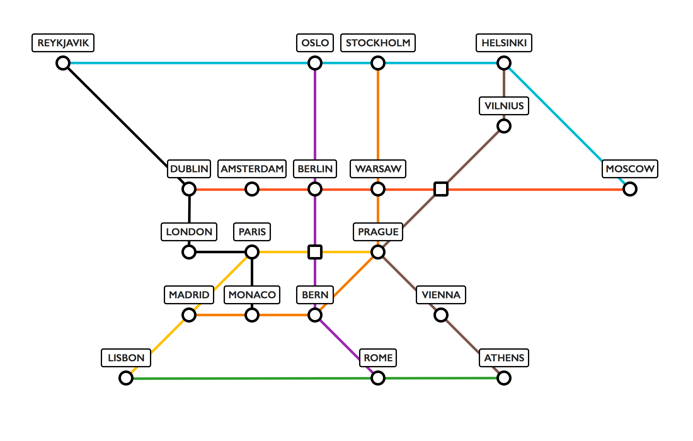

Locomotion Commotion
Download Game
What is Locomotion Commotion's aim?
Locomotion Commotion aims to be a PvP turn based train management strategy game. Players will complete goals by routing trains across Europe, upgrading and improving their vehicles and buying new stations along the way. From time to time players can collect 'special goals' introducing new and often hilarious dynamic to the game. Do you want to deliver the Crown Jewels from the Tower of London to the Italian Mafia in Rome? Do you want to sneak Edward Snowden out of Russia to a boat waiting for him in the south of France? Do you want to save the lives of five hundred Husky dogs by transporting them from Helsinki to Geneva, where they can get the medical attention they desperately need? Then you should work on Locomotion Commotion!
The craziness doesn't stop there however! We'd like to see random events appearing causing havoc on the lines. Gorillas might appear in Athens after escaping from the zoo, you're definitely going to have to avoid moving through there, that could slow your trains down for a long time! However, if another volcano eruption cancels flights everyone is going to want to use the trains, goals might become a lot more lucrative to achieve in north-west Europe!
Players can even summon the chaos on each other with the use of Wildcards! Is your opponent close to achieving his goal in Budapest? What a shame it would be if someone were to teleport their train to Reykjavik. Are you not going to reach a station before your opponent buys it? A speed boost would sure come in handy right about now. Wildcards let you do all of these things and more, adding new layers of chaos to the game.
What technologies does Locomotion Commotion use?
Locomotion Commotion is written in Java and utilises the libGDX library. Installation instructions are given in later pages.
What has been implemented so far?
So far Locomotion Commotion has:
- Clean Start Screen UI
- Well Formatted Game Interface
- Randomised Goal Generation
- Dijkstra's Algorithm used to decide on rewards for Goals
- Goals know when they've been completed
- Goal selection screen
- Train routing mode
- Cancelling routes
- Undoing routes
- In game shop
- Resource selling & Buying
- Randomised Wildcard purchasing
- Wildcard Resource addition effects
- Wildcard superclass
What features am I going to implement?
We'd like to see a lot of cool stuff added into this game to make it is as crazy as possible! But there are certain features that definitely need to be included:
- Points system
- End game condition implementation
- Multiple trains
- Random events (obstacles)
Other features which we would really like to see included are:
- Special Goals
- More Wildcards!
- Saving games (currently in the backend only)
- Loading games
- How to play implemented internally
- Station rent
- Line bonuses (like Monopoly)
- Multiple game modes
These features should be fairly straightforward to implement. They have always been in the forefront of our minds whilst working on the project! Many such as points, multiple trains, rent, game modes and saving games have already been partially implemented so should be easy to work in to the final game.
Why should I adopt Locomotion Commotion for Assessment 3?
Locomotion Commotion was built whilst keeping in mind all of the extra features we wanted to see implemented. The code is well structured and can support new screens very easily. Anyone familiar with libGDX will find adding new features very easy and those who aren't will have much to work from which should ease the transition quite well.
The game is well documented using JavaDocs, an Architecture report and a GUI report, available on our website, which are all designed to ease the transition between projects. Installation instructions are also given in the wiki and the user manual.